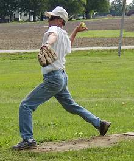
Tony Cork outdueled Jay Jared for the second time in his career firing a 5 hitter and allowing just one run. |
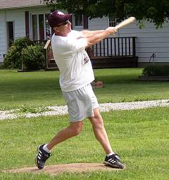
Jay Jared was 3-for-11 with 3 singles in game one. |
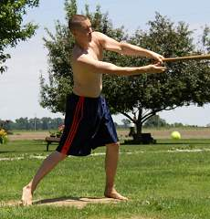
Josh Massey hit the crucial game-tying homerun in the top of the 9th and finished the doubleheader 7-for-27 with 3 RBI. |
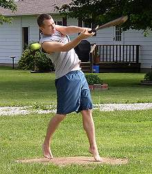
Ross Massey drove in his team's only run in game one with a solo homerun in the 4th inning. |
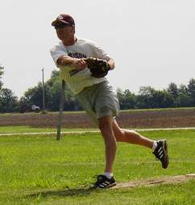
Jay Jared dominated for 8 innings but suffered the loss despite allowing just 2 runs and 8 hits. |
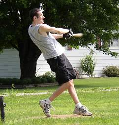
Patrick Cork won the first game with a 9th inning homerun - the 250th of his career. He finished the doubleheader 7-for-27 with 2 homeruns. |
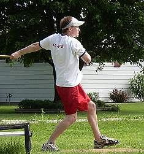
Ryan Tomlinson was back on the field for the first time in over a year and went 1-for-11. |
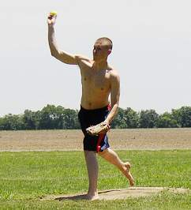
Josh Massey won game two of the doubleheader by allowing just one run on 7 hits to even his record at 1-1 on the year. |
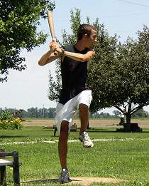
Kyle Shimer made his chair baseball debut in game two and finished 1-for-11 with a single. |
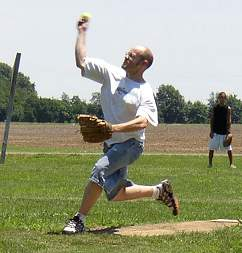
Kevin Ryan pitched for the first time in his career and took the loss despite allowing just 3 runs over 8 innings. |
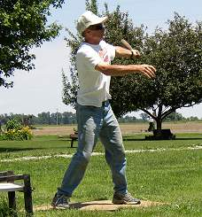
Tony Cork led the way in hitting on Saturday with an 8-for-23 afternoon including a double and a triple. |
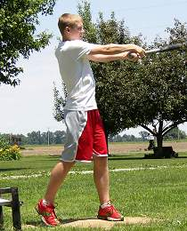
David Ulrich made his debut as well and went 4-for-15. |
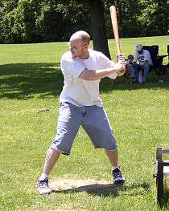
Kevin Ryan accounted for his team's only run in game number two with a long homerun over the dog's pen. |